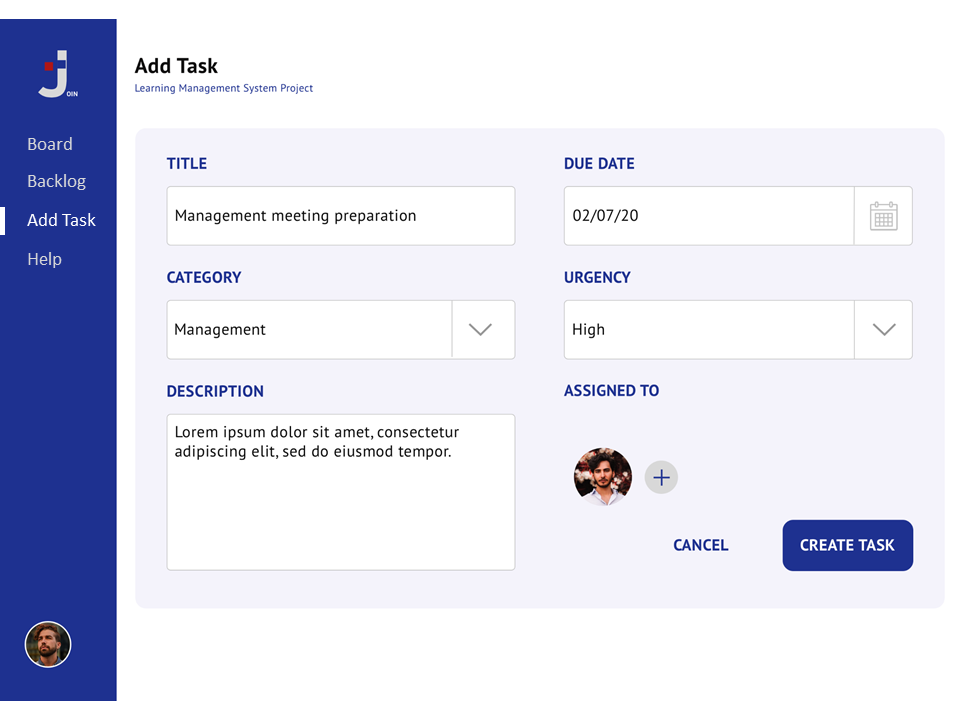
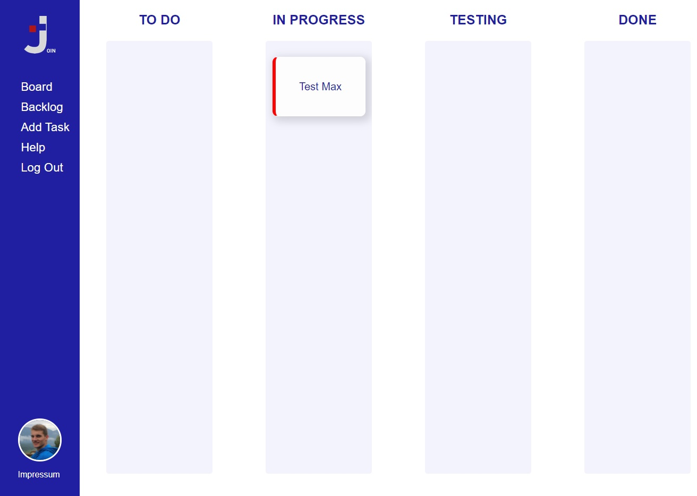
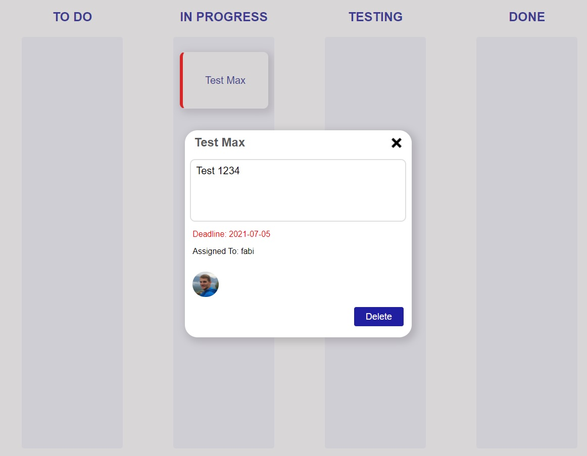
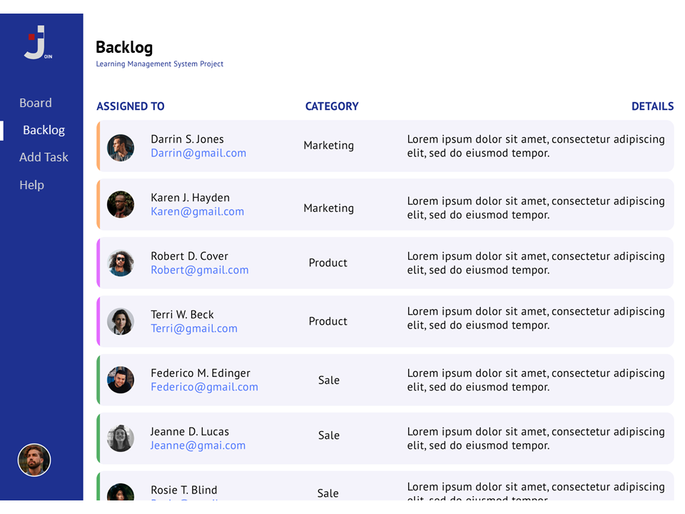

How to use Join
First you create a task
Fill in all requested inputfields and assign the users, who will work on this task.

All tasks will be diplayed on the board
Every task can shifted to the next processing status, by using Drag & Drop.

Click on the task, to see further information or to delete it.

Backlog
The backlog keeps track of the tasks and every single person, which is assigned to a specific task.
